O elemento HTML <header> representa um grupo de suporte introdutório ou navegacional. Pode conter alguns elementos de cabeçalho mas também outros elementos como um logo, seções de cabeçalho, formulário de pesquisa, e outros.
Exemplos de uso do <header>:
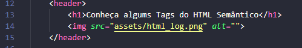
Nota: O elemento <header> não é separador de conteúdo (sectioning content), portanto, não introduz uma nova seção no outline.
Categoria de conteúdo Flow content, conteúdo palpável.
Conteúdo permitidoFlow content, mas não com descendentes de <header> ou footer
Omissão da tagNenhuma, as tags de abertura e fechamento são obrigatórias.
Elementos-pai permitidosQualquer elemento que aceite flow content. Note que o elemento <header> não deve ser descendente de address, <footer> ou outro elemento <header> .
<Section>
O elemento HTML <section> representa uma seção genérica contida em um documento HTML, geralmente com um título, quando não existir um elemento semântico mais específico para representá-lo. Por exemplo, um menu de navegação deve estar dentro um elemento nav, mas uma lista de resultados de pesquisa ou a exibição de um mapa e seus controles não possuem elementos específicos, e podem ser colocados dentro de uma <section>.
Exemplos de uso do <section>:
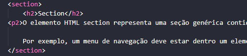
Este elemento inclui apenas os atributos globais.
<Article>
O Elemento HTML <Article> representa uma composição independente em um documento, página, aplicação, ou site, ou que é destinado a ser distribuido de forma independente ou reutilizável, por exemplo, em sindicação. Este poderia ser o post de um fórum, um artigo de revista ou jornal, um post de um blog, um comentário enviado por um usuário, um gadget ou widget interativos, ou qualquer outra forma de conteúdo independente.
Exemplos de uso do<Article>:
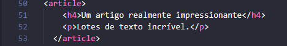
Nota: Este elemento não possui outros elementos se não os global attributes, comuns a todos os elementos.
Quando um elemento <Article> está aninhado, o elemento interior representa um artigo relacionado com o elemento exterior. Por exemplo, os comentários do post de um blog podem ser elementos <Article> aninhados em <Article> representando o post do blog.
Informações sobre o autor de um elemento <Article> podem ser fornecidas através do elemento "address" ,mas ele não se aplica aos elementos <Article> aninhados.
A data e hora de publicação de um elemento <Article> pode ser descrita usando o atributo pubdate de um elemento "time".
<Nav>
O Elemento HTML de Navegação <nav> representa uma seção de uma página que aponta para outras páginas ou para outras áreas da página, ou seja, uma seção com links de navegação.
Exemplos de uso do <nav>:
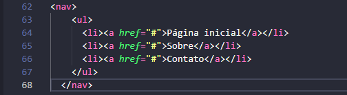
Nota: Este elemento não possui outros atributos além dos atributos globais, comuns a todos os elementos.
Nem todos os links de um documento devem estar dentro de um elemento <nav>, o qual é destinado apenas para grupos importantes de links de navegação; tipicamente o elemento "footer" contém uma lista de links que não precisam estar em um elemento <nav>.
Um documento pode ter vários elementos <nav>, por exemplo, um para navegação no site e outro para navegação dentro da página.
Agentes de usuário, como leitores de tela para usuários deficientes, podem utilizar este elemento para determinar se a renderização inicial do conteúdo do mesmo deve ser omitida.
<Aside>
O elemento HTML <aside> representa uma seção de uma página que consiste de conteúdo que é tangencialmente relacionado ao conteúdo do seu entorno, que poderia ser considerado separado do conteúdo. Essas seções são, muitas vezes, representadas como barras laterais. Elas muitas vezes contem explicações laterais, como a definição de um glossário; conteúdo vagamente relacionado, como avisos; a biografia do autor; ou, em aplicações web, informações de perfil ou links de blogs relacionados.
Exemplos de uso do <aside>:
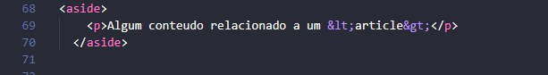
Nota: Não use o elemento <aside> para texto entre parenteses, pois este tipo de texto é considerado parte do fluxo principal.
Categoria de conteudo Conteudo de fluxo, conteudo de secionamento, conteudo palpavel.
Conteudo permitidoConteudo de fluxo.
Omissao de tag Nenhuma, ambas as tags de início e fim são obrigatórias.
Elementos pai permitidosQualquer elemento que aceita conteudo de fluxo. Note que um elemento <aside> nao deve ser descendente de um elemento <address>.
<Main>
O elemento <main> define o conteúdo principal dentro do <body> em seu documento ou aplicação. Entende-se como conteúdo principal aquele relacionado diretamente com o tópico central da página ou com a funcionalidade central da aplicação. O mesmo deverá ser único na página, ou seja, dentro do elemento <Main> não deverão ser incluidas seções da página que sejam comuns a todo o site ou aplicação, tais como mecanismos de navegação, informações de copyright, logotipo e campos de busca (a não ser, é claro, caso a função principal do documento seja fazer algum tipo de busca).
Exemplos de uso do <Main>:
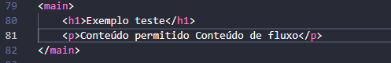
Nota: <main> não pode ser filho dos elementos <article>, <aside>, <footer>, <header>, ou <nav>. Autores não devem incluir mais de um elemento main no mesmo documento.
Categorias de conteúdoConteúdo de fluxo, conteúdo palpável.
Conteúdo permitido Conteúdo de fluxo.
Omissão de tag Nenhuma; ambas as tags de início e fim são obrigatórios.
Elementos pais permitidos Qualquer elemento que aceite conteúdo de fluxo, mas não pode ser filho dos elementos <article>> <aside>, <footer>, <header>, ou <nav>.
<Figure>
O elemento <figure> representa o conteúdo independente, frequentemente com uma legenda <figcaption>, e é normalmente referido como uma única unidade. Enquanto ela está relacionada com o fluxo principal, sua posição é independente do fluxo principal.Normalmente, isso é uma imagem, uma ilustração, um diagrama, um trecho de código ou uma esquema que é referenciado no texto principal, mas que pode ser movido para outra página ou para um apêndice, sem afetar o fluxo principal.
Exemplos de uso do <>:
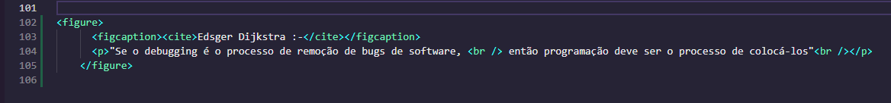
Nota: Uma legenda pode ser associada com o elemento <figure> inserindo o elemento dentro dele (no inicio ou no fim).
<Footer>
O elemento HTML de Rodapé <footer> representa um rodapé para o seu sectioning content (conteúdo de seção) mais próximo ou sectioning root elemento (ou seja, seu parente mais próximo <article>, <aside>, <nav>, <section>, <blockquote>, <body>, <details>, <fieldset>, <figure>, <td> (en-US)). Normalmente um rodapé contém informações sobre o autor da seção de dados, direitos autorais ou links para documentos relacionados.
Exemplos de uso do <footer>:
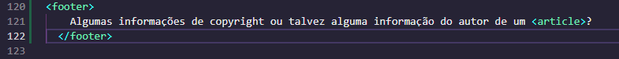
Este elemento não tem outros atributos que os global attributes, comuns a todos os elementos.
Coloque informações sobre o autor em um elemento <address> que pode ser incluído no elemento <footer>.
O elemento <footer> não é sectioning content portanto, não introduz uma nova seção no outline.
<a>
O elemento <a>
Exemplos de uso do <a> em HTML (ou elemento âncora), com o atributo href cria-se um hiperligação nas páginas web, arquivos, endereços de emails, ligações na mesma página ou endereços na URL. O conteúdo dentro de cada <a> precisará indicar o destino do link.
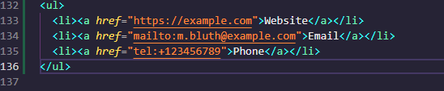
Nota: Download somente funciona para URLs de mesma origem , ou os esquemas blob: e data:
<em>
O elemento <em>marca o texto que tem ênfase. O elemento <em> pode ser aninhado, com cada nível de aninhamento indicando um grau maior de ênfase.
Exemplos de uso do <em>:
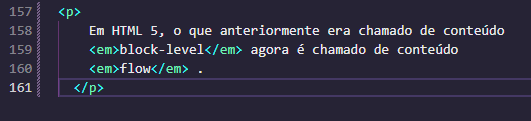
Nota: O elemento <em> é frequentemente usado para indicar um contraste implícito ou explícito.
Este elemento geralmente é mostrado no tipo itálico. Contudo, não deve ser usado simplesmente para aplicar estilo itálico; use o estilo CSS para esse propósito. Use o elemento <cite> para marcar o título de um trabalho (book, play, song, etc.); também é geralmente estilizado com tipo itálico, mas possui significado diferente. Use o elemento <strong> para marcar o texto que tem importância maior do que o texto que está em volta.
<Strong>
O elemento <Strong>dá ao texto uma forte importância, e é tipicamente mostrado em negrito.
Exemplos de uso do <Strong>:
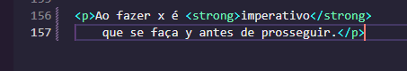
Nota: Este elemento inclui apenas os atributos globais.
<cite>
O elemento <cite>representa uma referência a um trabalho artístico. Deve incluir o título do trabalho ou uma URL de referência, que pode ser em uma forma abreviada de acordo com as convenções usadas para a adição dos metadados de citação.
Exemplos de uso do <cite>:
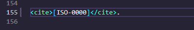
Para evitar que o itálico padrão do estilo seja usado pelo elemento <cite> use a propiedade font-style (en-US) do CSS.
Um trabalho criativo deve conter a citação de um livro,um documento,um ensaio,um poema,um filme,um programa de televisão,um video game,uma escultura,uma pintura,uma produção cinematográfica,um jogo,uma opera,um musical,uma exibição,um relatório de um caso legal,um programa de computador,um website,uma página da web,um post de um blog ou comentário,um post em um forum ou um comentário no mesmo,um tweet,uma obra ou discurso,etc.
O W3C específica alguns estados para referenciar um trabalho criativo que deve incluir o nome do autor,enquanto a WHATWG declarou que não deve ser incluso o nome do autor sob nenhuma circustância.
Use o atributo cite em um elemento <blockquote> ou <q> para referenciar uma fonte online.
Para evitar que o itálico padrão do estilo seja usado pelo elemento <cite> use a propiedade font-style (en-US) do CSS.
<figcaption>
O elemento <figcaption> <figcaption> representa uma legenda ou uma legenda associada com uma figura ou ilustração descrita pelo resto dos dados do elemento <figure> que seu elemento pai.
Exemplos de uso do <figcaption>:
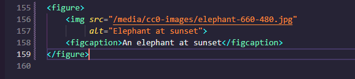
Nota: Esse elemento possui somente os atributos globais.